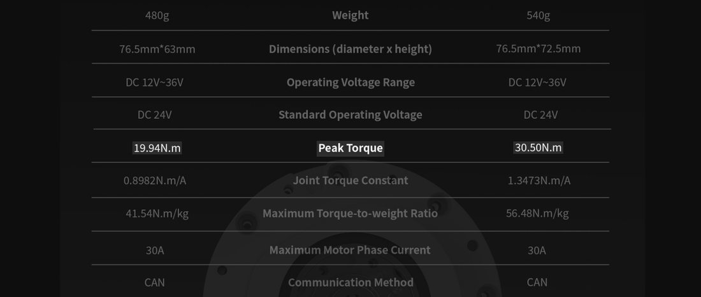
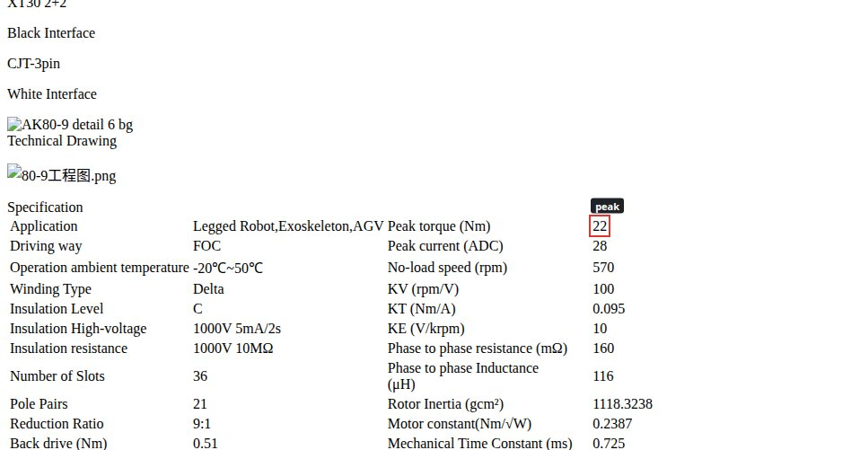
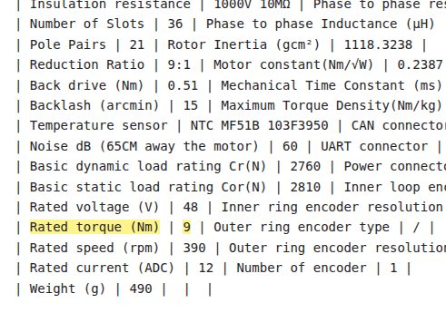
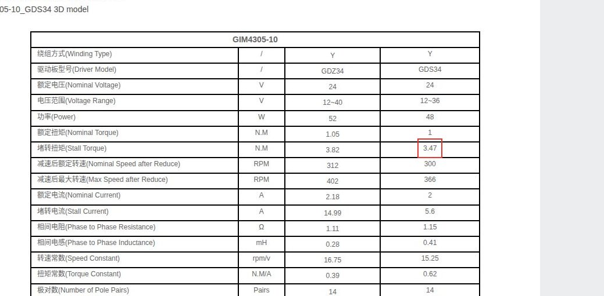
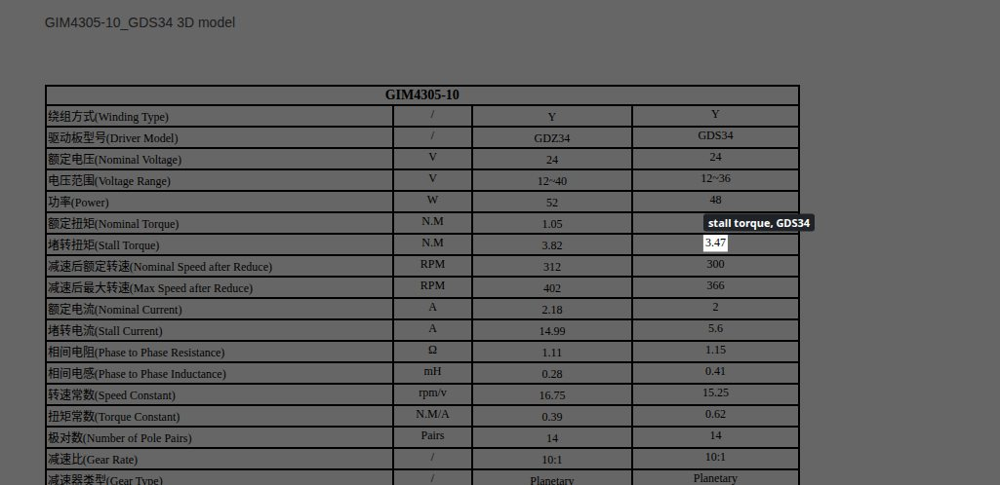

Source Highlighter
source + locations + style in → the source, highlighted, out.
Give it a PDF, a web page, a markdown note or an image, say where (a quote, a span, a table cell, a box on a page) and how (highlight, box, underline, spotlight, blackout). You get the source back with those places marked — as a picture, a marked PDF, or live in a browser. It never decides what to mark; that's the caller's job.
Recorded from the real ES module in headless Chromium, on SteadyWin's GIM4305-10 page saved by mdify capture
(https://www.steadywin.cn/en/h-pd-9.html). Each step's Python is in the bar; the cells are found by their place in the table, not by their text.
The API
One type in the middle. Make a Source however you like; every way gives the same thing.
Then highlight it, and show or save it — like matplotlib's show() and savefig().
1 · Source — one frozen type, set fields
A frozen dataclass in source_msgs, a stdlib-only package every source app can import without
importing the others (re-exported by source_highlighter). Its JSON is the source a stored
reference already carries.
| field | type | holds |
|---|---|---|
origin | str | where it came from: a URL, or a file's absolute path |
kind | str | pdf · html · image · text — what gets drawn on |
media_type | str | application/pdf, text/html, text/markdown, … |
sha256 | str | None | of the saved bytes; None while it is only a link |
path | str | None | the saved bytes (a file is saved as itself) |
retrieved_at | str | None | when, ISO 8601 UTC |
stored | FrozenDict | other capture levels kept: snapshot, pdf, single, archive |
title | str | None | a human name |
Constructors: many ways in, one type out
from source_highlighter import Source
link = Source.from_url("https://www.steadywin.cn/en/h-pd-9.html") # a link: no network yet
print(link.kind, link.media_type, link.is_saved)
pdf = Source.from_file("j60-joint.pdf") # read, hashed, kind sniffed
print(pdf.kind, pdf.media_type, pdf.id[:12], pdf.retrieved_at[:4])
note = Source.from_text("| Part | Rated torque |\n|---|---|\n| GIM4305-10 | 1 N·m |\n")
print(note.kind, note.media_type, note.to_markdown().splitlines()[2])
print(sorted(pdf.to_dict())) # a CONTRACT §5 Reference sourcehtml text/html False
pdf application/pdf 6ac4a2918c13 2026
text text/markdown | GIM4305-10 | 1 N·m |
['kind', 'media_type', 'path', 'retrieved_at', 'sha256', 'stored', 'title', 'url']2 · The verbs
| verb | does |
|---|---|
.capture(keep=("html","snapshot")) | saves the bytes: through mdify capture when it is installed (every capture level, word boxes on the snapshot), else one polite request (robots.txt honoured). A no-op once saved. |
.to_markdown() | markdown of it: read as is for markdown, through mdify for a PDF, page or image. |
.highlight(locations, style) | → Highlighted: the source + locations + style, as data. Nothing drawn yet. |
Highlighted.show() | draws it and opens it in your browser (never raised over your window) or inline in a notebook. SOURCE_HIGHLIGHTER_BACKEND=none, no display, or pytest: opens nothing. |
Highlighted.save(path) | draws it into a PNG / JPEG / marked PDF / HTML page; returns the marks and anything it could not place, with why. |
from source_highlighter import Source, TableCell
src = Source.from_bundle("steadywin-gim4305") # = Source.from_url(url).capture(), saved earlier
hl = src.highlight(TableCell(8, 4, table=33), "spotlight")
print(hl)
result = hl.save("stall.png") # always headless
print(len(result.marks), "mark,", len(result.unresolved), "unresolved")
page = hl.show() # browser / notebook; headless here: opens nothing
print(page.name)Highlighted(html 'https://www.steadywin.cn/en/h-pd-9.html': 1 in spotlight)
1 mark, 0 unresolved
index.html3 · Locations: a small union of selectors
Two families. Text-anchored selectors point into a source's underlying text — HTML, markdown, a PDF's text layer. Geometry-anchored ones point at a rendered surface with no text — a photo, a scan, a screenshot. Each has a one-line compact form borrowed from a web standard, and turns into the JSON the highlighter draws for whichever kind of source it meets. Finding "this text" in a source is a resolver step below the highlighter (the quote find, mdify's index); the selectors carry its answer.
| selector | anchor | fields | compact | borrowed from |
|---|---|---|---|---|
TextQuote | text | exact, prefix, suffix, page | text=prefix-,exact,-suffix | Text Fragments |
TextPosition | text | start, end | char=840,846 | RFC 5147 |
XPath | text | path | xpath=/html/body/… | W3C XPathSelector |
Css | text | selector | css=table.spec td | W3C CssSelector |
TableCell | text | row, col, table | table=1&row=3&col=2 | — |
Note | text | heading, block | heading=Pricing | Obsidian links |
PageBox | geometry | page, x, y, w, h (0–1) | page=2&xywh=percent:61,40,7,2 | Media Fragments + PDF open params |
Page | geometry | page | page=33 | PDF open parameters |
from source_highlighter import *
for selector, kind in [
(TextQuote("20 Nm", prefix="Rated torque ", suffix=" Peak"), "html"),
(TextPosition(840, 846), "text"),
(PageBox(2, 0.61, 0.40, 0.07, 0.02), "pdf"),
(Page(33), "pdf"),
(XPath("/html/body/main/table[2]/tr[3]/td[2]"), "html"),
(Css("table.spec td.value"), "html"),
(TableCell(3, 2), "html"),
(Note(heading="Pricing"), "text"),
]:
print(f"{type(selector).__name__:12} {selector.anchor:8} {selector.compact()}")
print(f"{'':21} → {selector.to_location(kind)}")TextQuote text text=Rated%20torque%20-,20%20Nm,-%20Peak
→ {'html': {'text_quote': {'exact': '20 Nm', 'prefix': 'Rated torque ', 'suffix': ' Peak'}}}
TextPosition text char=840,846
→ {'text': {'start': 840, 'end': 846}}
PageBox geometry page=2&xywh=percent:61,40,7,2
→ {'page': 2, 'box': [0.61, 0.4, 0.68, 0.42]}
Page geometry page=33
→ {'page': 33}
XPath text xpath=/html/body/main/table[2]/tr[3]/td[2]
→ {'html': {'xpath': '/html/body/main/table[2]/tr[3]/td[2]'}}
Css text css=table.spec%20td.value
→ {'html': {'css': 'table.spec td.value'}}
TableCell text table=1&row=3&col=2
→ {'html': {'xpath': '(//table)[1]/descendant::tr[3]/*[self::td or self::th][2]'}}
Note text heading=Pricing
→ {'note': {'heading': 'Pricing'}}Nothing is dropped silently
A selector that can't address this kind of source is reported with the reason, beside the marks that were drawn.
from source_highlighter import Source, TableCell, PageBox
src = Source.from_file("j60-joint.pdf")
result = src.highlight([TableCell(3, 2), "page=2&xywh=percent:19,30.9,6.4,0.8"], "box").save("mixed.png")
print(len(result.marks), "drawn")
for entry in result.unresolved:
print(entry.location, "→", entry.reason)1 drawn
table=1&row=3&col=2 → a table cell on a pdf needs its box: mdify's index.json gives every table_cell block a page + box (use a PageBox)Gallery
One card per kind of source. Each picture is the real output of the three lines under it (cropped around the marks).


A datasheet PDF, page 2 of the J60 joint: the peak-torque row, spotlit. Geometry-anchored boxes (compact strings: PDF page + Media Fragments xywh), drawn into the page by pdfium.
src = Source.from_file("j60-joint.pdf")
hl = src.highlight(["page=2&xywh=percent:45.55,30.849,8.984,1.099", "page=2&xywh=percent:19.228,30.909,6.423,0.801", "page=2&xywh=percent:73.552,30.879,6.465,0.772"], "spotlight")
hl.save("pdf.png")

HTML page
CubeMars' AK80-9 product page, archived (scripts off, no network). A text quote pinned by its prefix — found exactly once in the page, else reported.
src = Source.from_file("cubemars-ak80-9.html")
hl = src.highlight(TextQuote("22", prefix="Peak torque (Nm)", label="peak"), "box", label=True)
hl.save("html.png")

Markdown
The same spec as a markdown table. TableCell counts rows from the header row; it becomes the cell's exact character span.
src = Source.from_file("cubemars-ak80-9-spec.md")
hl = src.highlight([TableCell(19, 1), TableCell(19, 2)], "highlight")
hl.save("markdown.png")

Image / screenshot
The GIM4305-10 page as a picture (mdify's capture-time snapshot). No text layer, so the location is a box: the word box mdify measured for “3.47”.
src = Source.from_file("steadywin-gim4305/snapshot.jpg")
hl = src.highlight(PageBox(1, 0.7731, 0.4093, 0.0242, 0.0105), "box")
hl.save("image.png")

Table cell
The live GIM4305-10 page, saved by mdify capture: the GDS34 column's stall torque, by its cell — not by searching for “3.47”, so a value that repeats can't fool it.
src = Source.from_bundle("steadywin-gim4305") # mdify capture https://www.steadywin.cn/en/h-pd-9.html
hl = src.highlight(TableCell(8, 4, table=33, label="stall torque, GDS34"), "spotlight", label=True)
hl.save("table-cell.png")